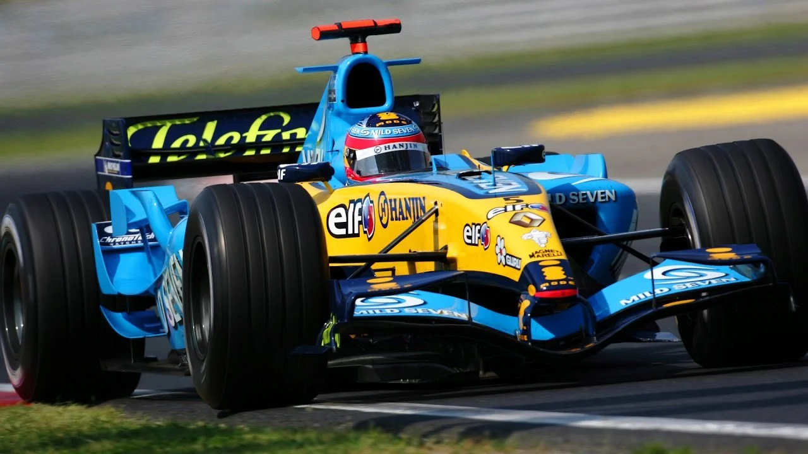

2005

Le più importanti scuderie che hanno partecipato al Campionato Mondiale di Formula1 2005 erano:
- Renault
- Ferrari
- McLaren
- Toyota
Il mondiale è stato vinto da Fernando Alonso che pochi anni prima firmò un contratto con la scuderia francese Renault.
Alonso è uno dei piloti più longevi di queto campionato che ha vinto per due volte di fila nellle stagioni 2005 e 2006.
HOME
Tutti i diritti sono riservati
Sito realizzato da Boniotti Elisa, Lucchini Davide, Tassone Thomas